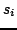
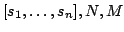
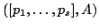
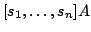
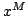
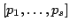
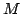

Usage
polynomials([], N)
polynomials([
Signatures
polynomials: (Vector RXX, Integer) (Vector RX, DenseMatrix R)
polynomials: (Vector RXX, Integer, Integer)
| Parameter | Type | Description |
|---|---|---|
|  | RXX | series |
| N | Integer | a degree bound |
| M | Integer | an upper bound |
Description
polynomials( ) returns  such that the series  all have coefficientsfrom
to , and  are the truncations to order
of . If the upper bound  is not given, then the series returned have coefficients